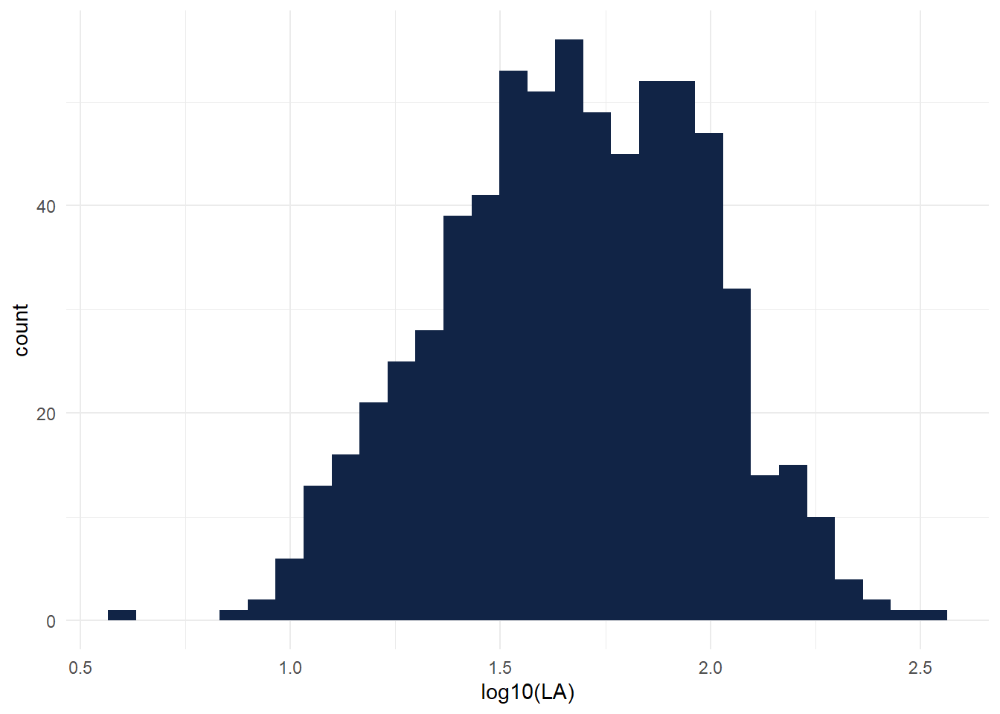
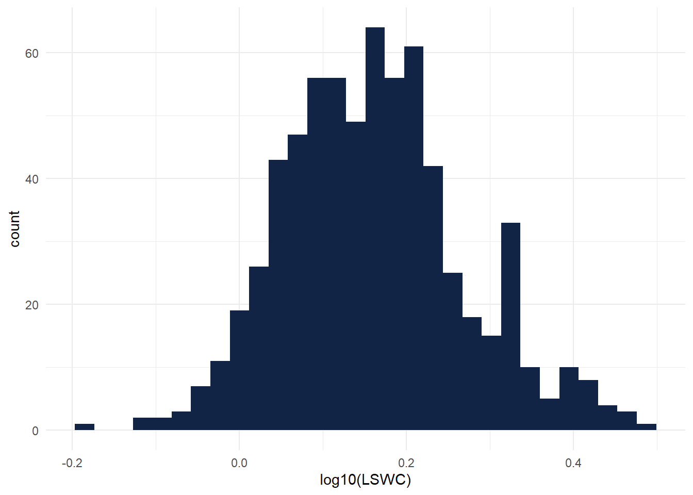
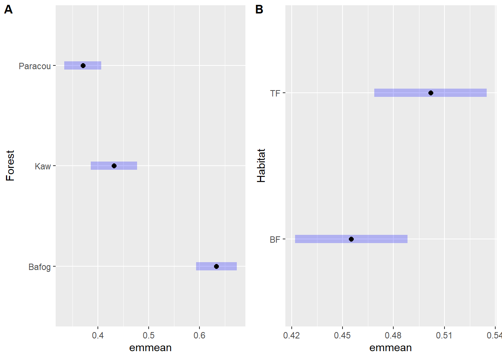
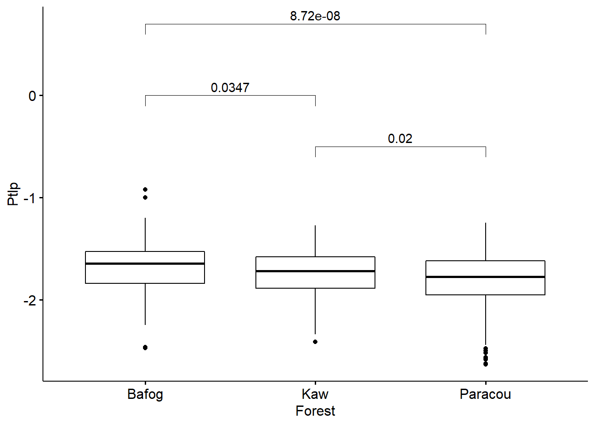
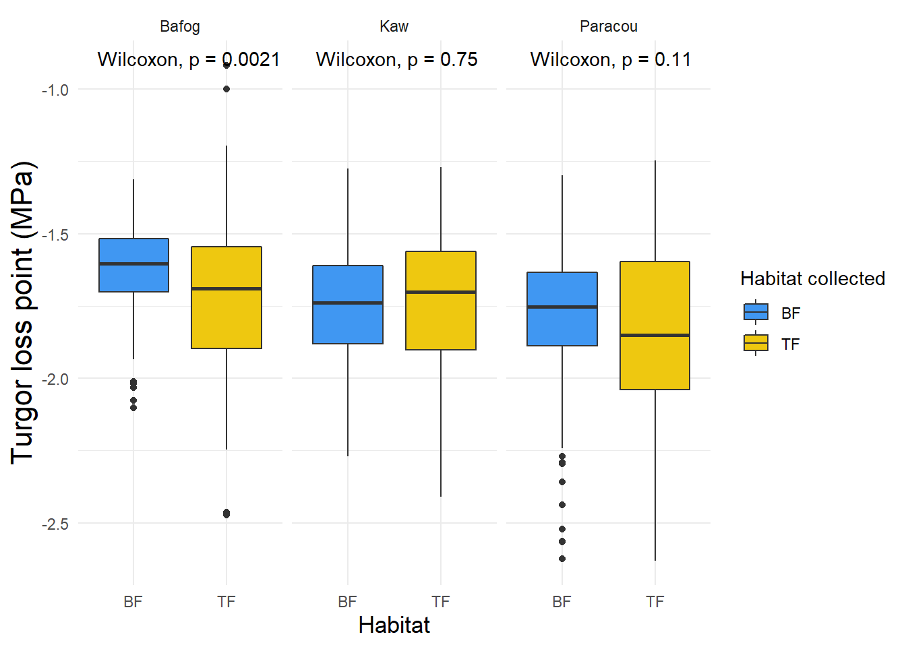
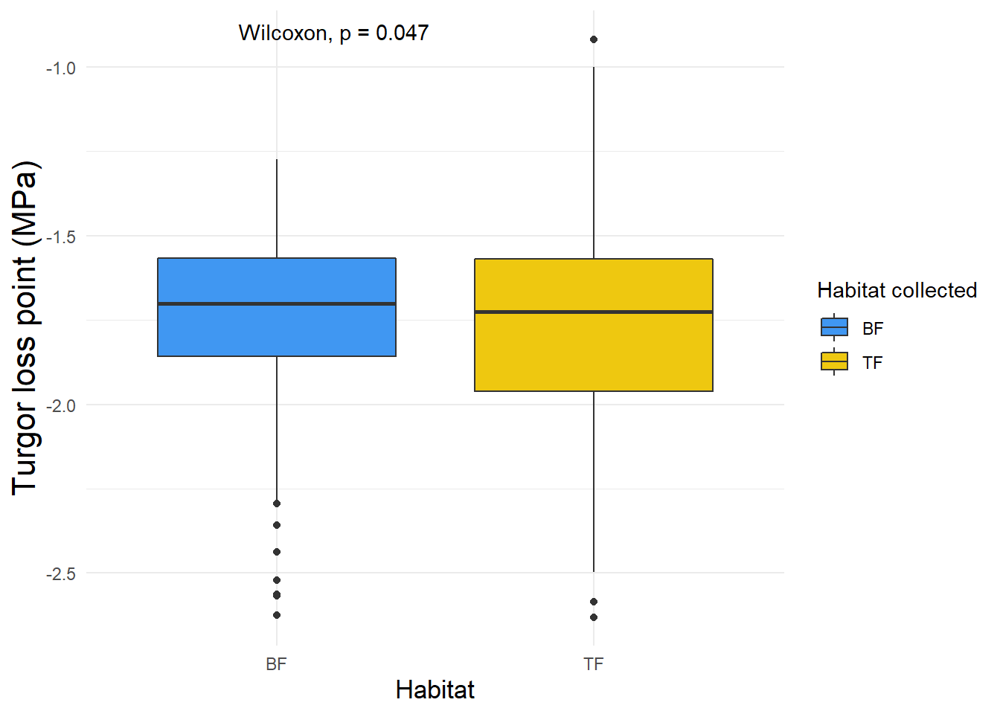
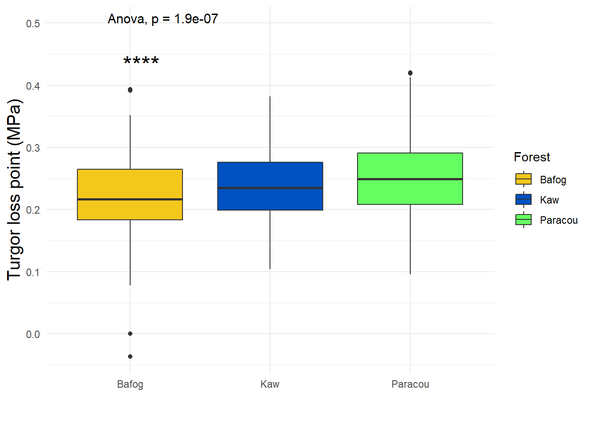

Chapter 6 Data exploration
How to visualize the data and show the links between the variables and identify the same responses of the individuals?
6.1 General PCA
6.1.1 Contribution of individuals and variables : 1-2 dimensions


6.1.2 Contribution of individuals and variables : 1-2 dimensions


6.1.3 Habitat collected

6.1.4 Habitat preference -type

6.1.5 Forest sites

6.1.6 Dawkins of tree

6.1.7 Species

6.2 Distribution of major traits
A focus on the frequency distribution of traits of individuals within communities allows scaling up from organism to ecosystem level and assessing how ecological communities and ecosystems respond to climate drivers (Garnier et al 2016; Liu et al 2020).
The shape of trait distribution could have the potential to reveal the ecological significance of trends and tradeoffs in traits at the species level. A focus on the mean and the variance of the community trait distribution is rooted in the concept of phenotype-environment matching and environmental optimality, where species’ relative abundance is mediated by their traits, that is, “community assembly by trait selection”. To understand how community trait composition is affected by ecological processes.
- use of community-weighted trait metrics CWM
- variance
- mean
- skewness (symmetry)
- kurtosis (measure of tailness with heavy tail referring to outliers)
after log tranform
6.2.1 leaf minimal conductance
library(ggplot2)
ggplot(Metradica) +
aes(x = log10(Gmin)) +
geom_histogram(bins = 30L, fill = "#112446") +
theme_minimal()## Warning: Removed 16 rows containing non-finite values (stat_bin).
6.2.2 Turgor loss point
## Warning: Removed 33 rows containing non-finite values (stat_bin).
The πtlp values in our data set were on average less negative than those previously reported in the literature (for moist tropical forests (Fig. 1) (Maréchaux 2015). There are several possible explanations for such a pattern, one of them being that as they conducted their measurements at the peak of the dry season, we also measured πtlp at the peak of the dry season, but 2020-2021 dry seasons were “wetter” than usual. Plants often acclimate πtlp during drought periods, through the accumulation of cell solutes, or osmotic adjustment. Such an adjustment results in a lowering of πtlp and can contribute to drought tolerance in vegetation world-wide (Wright et al. 1992; Abrams & Kubiske 1994; Cao 2000; Merchant et al. 2007; Zhu & Cao 2009; Bartlett, Scoffoni & Sack 2012b; Bartlett et al. 2014).
6.2.3 Leaf area
ggplot(Metradica) +
aes(x = log10(LA)) +
geom_histogram(bins = 30L, fill = "#112446") +
theme_minimal()## Warning: Removed 14 rows containing non-finite values (stat_bin).
6.2.4 Specifig leaf area
ggplot(Metradica) +
aes(x = log10(SLA)) +
geom_histogram(bins = 30L, fill = "#112446") +
theme_minimal()## Warning: Removed 14 rows containing non-finite values (stat_bin).
6.2.5 leaf saturated water content
ggplot(Metradica) +
aes(x = log10(LSWC)) +
geom_histogram(bins = 30L, fill = "#112446") +
theme_minimal()## Warning in FUN(X[[i]], ...): production de NaN
## Warning in FUN(X[[i]], ...): production de NaN## Warning: Removed 14 rows containing non-finite values (stat_bin).
6.4 Gmin - exploration
The capacity to retain water will become increasingly important for survival of tropical trees. Along with other plant hydraulic traits, cuticle conductance may strongly affect survival during droughts (Cochard, 2020).
ANOVA reports a p-value far below 0.05, indicating there are differences in the means in the forest sites and habitat collect. Tukey post-hoc test shows groups a Bafog and b for Paracou and Kaw. It also shows groups TF a and BF b.
Model_gmin <- lm(log10(Gmin) ~ Forest + Habitat, data = Metradica)
The data
## # A tibble: 3 x 2
## Forest Gmin
## <chr> <dbl>
## 1 Bafog 5.47
## 2 Kaw 3.60
## 3 Paracou 3.08##
## Call:
## lm(formula = log10(Gmin) ~ Forest + Habitat, data = Metradica)
##
## Residuals:
## Min 1Q Median 3Q Max
## -1.63849 -0.21047 -0.01908 0.18124 1.00943
##
## Coefficients:
## Estimate Std. Error t value Pr(>|t|)
## (Intercept) 0.60964 0.02449 24.889 < 2e-16 ***
## ForestKaw -0.20127 0.03086 -6.522 1.36e-10 ***
## ForestParacou -0.26243 0.02768 -9.480 < 2e-16 ***
## HabitatTF 0.04678 0.02372 1.973 0.049 *
## ---
## Signif. codes: 0 '***' 0.001 '**' 0.01 '*' 0.05 '.' 0.1 ' ' 1
##
## Residual standard error: 0.3058 on 671 degrees of freedom
## (16 observations deleted due to missingness)
## Multiple R-squared: 0.1346, Adjusted R-squared: 0.1307
## F-statistic: 34.78 on 3 and 671 DF, p-value: < 2.2e-16## Analysis of Variance Table
##
## Response: log10(Gmin)
## Df Sum Sq Mean Sq F value Pr(>F)
## Forest 2 9.396 4.6980 50.2291 < 2e-16 ***
## Habitat 1 0.364 0.3639 3.8911 0.04895 *
## Residuals 671 62.760 0.0935
## ---
## Signif. codes: 0 '***' 0.001 '**' 0.01 '*' 0.05 '.' 0.1 ' ' 16.4.1 Plots
gmin <- Metradica %>%
filter(!is.na(Type)) %>%
ggplot() +
aes(x = Type, y = log10(Gmin), fill = Type) +
geom_boxplot(shape = "circle") +
labs(
x = "",
y = "Minimal conductance (mmol.m-2.s-1)"
) +
scale_fill_manual(
values = list(
BF = "#6DB4EE",
Generalist = "#B6F09A",
TF = "#FFD361"
)
) +
theme_minimal() +
stat_compare_means(method = "anova", label.y = 2, size = 3)+ theme(axis.title = element_text(size = 10)) + stat_compare_means(aes(label = ..p.signif..),
method = "anova", label.y = 1.5, size = 7)library(ggplot2)
library(plotly)
library(ggplot2)
library(cowplot)
#gmin with all species- interactive graph
plot_ly(Metradica, y = ~Gmin, color = ~Name, type = "box", showlegend = FALSE) %>% layout(yaxis = list(title ='Minimal conductance (mmol.m-2.s-1)'))#forest
options(digits = 10)
means <- aggregate(Gmin ~Forest, Metradica, mean)
A<- ggplot(Metradica) +
aes(x = Forest, y = log10(Gmin), fill = Forest, group = Forest) +
geom_boxplot(shape = "circle") +
scale_fill_manual(values = list(Bafog = "#ED9210", Kaw = "#0C8FCD", Paracou = "#10C65B")) +
labs(
x = "",
y = "Minimal conductance (mmol.m-2.s-1)"
) +
stat_summary(fun.y="mean", colour = "red", geom="point") +
theme_minimal() +
stat_compare_means(method = "anova", label = "p.signif")
B <- ggplot(Metradica) +
aes(x = Forest, y = Gmin, colour = Name) +
geom_boxplot(shape = "circle", fill = "#112446") +
labs(
x = "Forest sites",
y = ""
) +
scale_color_hue(direction = 1) +
theme_minimal() +
theme(legend.position="bottom")
ggarrange(ncol = 1, plotlist = list(A, B), nrow = 2)
The adjusted mean arises when statistical averages must be corrected to compensate for data imbalances and large variances.

6.4.2 Gmin and other variables?
Yes : MajVLA and SLA. $quanti correlation p.value MajVLA 0.09328913682 0.01618976310 FvFm 0.06178897606 0.10874004687 LSWC -0.04404830581 0.25416539130 Ptlp -0.05363521589 0.17134527454 LA -0.08838865629 0.02213220611 SLA -0.09932187546 0.01009827694
M_gmin <- lm(Gmin ~ MajVLA + SLA, data = Metradica)
library(ggplot2)
library(ggpubr)
ggplot(Metradica,aes(x = Gmin, y = MajVLA)) +
geom_point() +
geom_smooth(method = "lm", se=FALSE) +
stat_regline_equation(label.y = 30, aes(label = ..eq.label..)) +
stat_regline_equation(label.y = 25, aes(label = ..rr.label..))## `geom_smooth()` using formula 'y ~ x'## Warning: Removed 27 rows containing non-finite values (stat_smooth).## Warning: Removed 27 rows containing non-finite values (stat_regline_equation).
## Removed 27 rows containing non-finite values (stat_regline_equation).## Warning: Removed 27 rows containing missing values (geom_point).
ggplot(Metradica,aes(x = SLA, y = Gmin)) +
geom_point() +
geom_smooth(method = "lm", se=FALSE) +
stat_regline_equation(label.y = 30, aes(label = ..eq.label..)) +
stat_regline_equation(label.y = 25, aes(label = ..rr.label..))## `geom_smooth()` using formula 'y ~ x'## Warning: Removed 21 rows containing non-finite values (stat_smooth).## Warning: Removed 21 rows containing non-finite values (stat_regline_equation).
## Removed 21 rows containing non-finite values (stat_regline_equation).## Warning: Removed 21 rows containing missing values (geom_point).
interpretation Across all species and all sites, gmin averaged 4.02 mmol.m-2.s-1. Gmin varied significantly among species (F-statistic: 18.10326, p-value: < 2.2204e-16). Across sites, gmin ranged from 3.08 mmol m–2 s–1 in Paracou to 3.60 mmol m–2 s–1 in Kaw to 5.47 mmol.m-2.m-1 i Bafog and site differences were significant (F-statistic: 50.0139, p-value: < 2.2204e-16).
It is unclear whether a higher gmin in the Bafog site is assigned to stomatal opening or a higher permeability of the cuticle. We may need to consider soil water access as an additional factor to understand the pattern.
literature Slot et al 2021 found across 24 tropical species an average gmin of 4.0 mmol m–2 s–1. Large differences among species in cuticular water loss have the potential to contribute to differential mortality during drought, phenomena that are increasingly common in the tropics (Rifai et al 2019)
- Test the phylogenetic signal.
- compare with stomatal density
- see if more trichomes for bafog site that could explain why these species can afford to have a higher gmin?
6.5 LSWC - exploration
One of the direct results of the regulation of stomatal movement is the reduction of water loss through transpiration by adjusting the leaf stomatal conductance, to achieve a high water-use efficiency and prevent embolism, which is called isohydric behavior. In contrast, the leaf stomatal conductance is kept at a relatively high level to maintain efficiently photosynthesis, which is known as anisohydric behavior (Roman et al., 2015). Therefore, LSWC reflect the plant’s response to drought. (Zhou et al 2021)
## # A tibble: 4 x 2
## Type LSWC
## <chr> <dbl>
## 1 BF 1.63
## 2 Generalist 1.42
## 3 TF 1.45
## 4 <NA> NaN##
## Call:
## lm(formula = log10(LSWC) ~ Type, data = Metradica)
##
## Residuals:
## Min 1Q Median 3Q Max
## -0.32201418 -0.06950474 -0.00598801 0.05773049 0.35088686
##
## Coefficients:
## Estimate Std. Error t value Pr(>|t|)
## (Intercept) 0.203434520 0.007300890 27.86435 < 2.22e-16 ***
## TypeGeneralist -0.064338761 0.009272691 -6.93852 9.3169e-12 ***
## TypeTF -0.050323073 0.011603422 -4.33692 1.6660e-05 ***
## ---
## Signif. codes: 0 '***' 0.001 '**' 0.01 '*' 0.05 '.' 0.1 ' ' 1
##
## Residual standard error: 0.1047875 on 674 degrees of freedom
## (14 observations deleted due to missingness)
## Multiple R-squared: 0.06805087, Adjusted R-squared: 0.06528544
## F-statistic: 24.60772 on 2 and 674 DF, p-value: 4.843664e-11## Analysis of Variance Table
##
## Response: log10(LSWC)
## Df Sum Sq Mean Sq F value Pr(>F)
## Type 2 0.5404060 0.270202986 24.60772 4.8437e-11 ***
## Residuals 674 7.4008001 0.010980416
## ---
## Signif. codes: 0 '***' 0.001 '**' 0.01 '*' 0.05 '.' 0.1 ' ' 16.5.1 Plots
lswc <- Metradica %>%
filter(!is.na(Type)) %>%
ggplot() +
aes(x = Type, y = log10(LSWC), fill = Type) +
geom_boxplot(shape = "circle") +
labs(
x = "",
y = "Leaf saturated water content (g.g)", fill ="Habitat preference"
) +
scale_fill_manual(
values = list(
BF = "#6DB4EE",
Generalist = "#B6F09A",
TF = "#FFD361"
)
) +
theme_minimal() +
stat_compare_means(method = "anova", label.y = 0.75, size = 3)+ theme(axis.title = element_text(size = 10)) + stat_compare_means(aes(label = ..p.signif..),
method = "anova", label.y = 0.5, size = 7)
lswc
6.6 Ptlp - exploration
Leaf turgor loss point (πtlp) indicates the capacity of a plant to maintain cell turgor pressure during dehydration, which has been proven to be strongly predictive of the plant response to drought.
library(ggplot2)
library(plotly)
library(ggplot2)
library(cowplot)
#ptlp with all species- interactive graph
plot_ly(Metradica, y = ~Ptlp, color = ~Name, type = "box")## Warning: Ignoring 33 observations## Warning in RColorBrewer::brewer.pal(N, "Set2"): n too large, allowed maximum for palette Set2 is 8
## Returning the palette you asked for with that many colors
## Warning in RColorBrewer::brewer.pal(N, "Set2"): n too large, allowed maximum for palette Set2 is 8
## Returning the palette you asked for with that many colors6.6.1 Paracou data set
Several outliers are either marked as “herbivory”, are “young”, or have Run = 4 and trace of fungi (659).
6.6.2 Bafog data set
library(plotly)
library(ggplot2)
BafogPtlp <- googlesheets4::read_sheet("https://docs.google.com/spreadsheets/d/14E9RjSB4dq8epcDBqMtRi1HOGddbhLOWA8g6TF1bDWM/edit#gid=1237961205", range = "ptlp")
plot_ly(BafogPtlp, x=~SpCode, y=~Ptlp, type = "box",text=~Code)Several outliers are either marked as “Erreur bota”, “pas de stabilisation”, and two leaves are Run 4 and 3.
6.6.3 Kaw data set
library(plotly)
library(ggplot2)
KawPtlp <- googlesheets4::read_sheet("https://docs.google.com/spreadsheets/d/1ywbd6_6DWfqCguahhEvs0qt0d3jAtsbt94xydm-maqI/edit#gid=922870345", range = "ptlp")
plot_ly(KawPtlp, x=~SpCode, y=~Ptlp, type = "box",text=~Code)Several outliers are either marked as “Epiphytes”, “herbivory”, One run is 4.
The variability in πtlp among species indicates the potential for a range of species responses to drought within Amazonian forest communities.
For Symphonia globulifera we couldn’t exclude first- and second-order veins (that may have resulted in apoplastic dilution that would lead to less negative osmometer values (Kikuta & Richter 1992)). Eventhough it does not appear to be an outlier, we still have too keep in mind that the overall values would be more negative.
We found lower TLP values (less negative) for 7 species (above - 1.6 MPa):
- Dicorynia guianensis (as Maréchaux et al 2015)
- Eschweleira coriacea (as Maréchaux et al 2015)
- Hymenopus heteromorphus
- Iryanthera sagotiana
- Iryanthera hostmannii
- Jacaranda copaia subsp. copaia
- Pterocarpus officinalis
We found higher TLP values (more negative) for 10 species (below - 1.87 MPa) including Voucapoua americana and both Protium species like Maréchaux et al 2015. Protium species have been found in more seasonally dry forests across the Amazonia (Ter Steege et al 2006).
Correlation with other variable : LSWC and SLA


6.6.4 Anova and plots
# Global test
library(ggpubr)
library(ggfortify)
Metradica$Forest <- as.factor(Metradica$Forest)
Metradica$Habitat <- as.factor(Metradica$Habitat)
Metradica$Name <- as.factor(Metradica$Name)
Model_Ptlp<-lm(Ptlp ~ Forest+Habitat, data = Metradica)
#autoplot(Model_Ptlp)
summary(Model_Ptlp)##
## Call:
## lm(formula = Ptlp ~ Forest + Habitat, data = Metradica)
##
## Residuals:
## Min 1Q Median 3Q Max
## -0.83951909 -0.14950221 0.02155209 0.16410242 0.78474577
##
## Coefficients:
## Estimate Std. Error t value Pr(>|t|)
## (Intercept) -1.64836556 0.02032153 -81.11425 < 2.22e-16 ***
## ForestKaw -0.06762974 0.02552452 -2.64960 0.0082535 **
## ForestParacou -0.13666285 0.02311207 -5.91305 5.4111e-09 ***
## HabitatTF -0.05506271 0.01967143 -2.79912 0.0052753 **
## ---
## Signif. codes: 0 '***' 0.001 '**' 0.01 '*' 0.05 '.' 0.1 ' ' 1
##
## Residual standard error: 0.2507383 on 654 degrees of freedom
## (33 observations deleted due to missingness)
## Multiple R-squared: 0.05737529, Adjusted R-squared: 0.05305133
## F-statistic: 13.26913 on 3 and 654 DF, p-value: 2.036469e-08anova(Model_Ptlp) # ANOVA reports a p-value far below 0.05, indicating there are differences in the means in the forest sites and habitat and varies across species.## Analysis of Variance Table
##
## Response: Ptlp
## Df Sum Sq Mean Sq F value Pr(>F)
## Forest 2 2.010091 1.00504546 15.98616 1.666e-07 ***
## Habitat 1 0.492589 0.49258922 7.83508 0.0052753 **
## Residuals 654 41.116794 0.06286972
## ---
## Signif. codes: 0 '***' 0.001 '**' 0.01 '*' 0.05 '.' 0.1 ' ' 1#tukey_Ptlp <- TukeyHSD(aov(Model_Ptlp))
library(agricolae)
#tukey2 <- HSD.test(aov(Model_Ptlp), trt = 'Forest') #show groups a Bafog and b for Paracou and c for Kaw
#tukey3 <- HSD.test(aov(Model_Ptlp), trt = 'Habitat') #show groups TF a and BF b
library(rstatix)
stat.test <- aov(Ptlp ~ Forest, data = Metradica) %>%
tukey_hsd()
ggboxplot(Metradica, x = "Forest", y = "Ptlp") +
stat_pvalue_manual(
stat.test, label = "p.adj",
y.position = c(0, 0.7, -0.5)
)
library(dplyr)
library(ggplot2)
# BF vs TF per site
Metradica %>%
filter(!is.na(Habitat)) %>%
ggplot() +
aes(x = Habitat, y = Ptlp, fill = Habitat) +
geom_boxplot(shape = "circle") +
scale_fill_manual(values = list(
BF = "#4097F2", TF = "#EEC810")) +
labs(x = "Habitat", y = "Turgor loss point (MPa)", fill = "Habitat collected") +
theme_minimal() +
theme(plot.subtitle = element_text(size = 18L), plot.caption = element_text(size = 17L),
axis.title.y = element_text(size = 16L), axis.title.x = element_text(size = 13L)) +
facet_wrap(vars(Forest)) + stat_compare_means()
# BF vs TF all sites blended
Metradica %>%
filter(!is.na(Habitat)) %>%
ggplot() +
aes(x = Habitat, y = Ptlp, fill = Habitat) +
geom_boxplot(shape = "circle") +
scale_fill_manual(values = list(
BF = "#4097F2", TF = "#EEC810")) +
labs(x = "Habitat", y = "Turgor loss point (MPa)", fill = "Habitat collected") +
theme_minimal() +
theme(plot.subtitle = element_text(size = 18L), plot.caption = element_text(size = 17L),
axis.title.y = element_text(size = 16L), axis.title.x = element_text(size = 13L)) + stat_compare_means()
#habitat preference
tlp <- Metradica %>%
filter(!is.na(Type)) %>%
ggplot() +
aes(x = Type, y = log10(abs(Ptlp)), fill = Type) +
geom_boxplot(shape = "circle") +
scale_fill_manual(values = list(BF = "#6DB4EE",
Generalist = "#B6F09A",
TF = "#FFD361")) +
labs(x = " ", y = "Turgor loss point (MPa)",
fill = "Habitat preference") +
theme_minimal() +
theme(plot.subtitle = element_text(size = 19L),
plot.caption = element_text(size = 10), axis.title.y = element_text(size = 10), axis.title.x = element_text(size = 20L)) + stat_compare_means(method = "anova", label.y = 0.6, size = 3)+ theme(axis.title = element_text(size = 10)) + stat_compare_means(aes(label = ..p.signif..),
method = "anova", label.y = 0.5, size = 7)
### 3 sites
ggplot(Metradica) +
aes(x = Forest, y = log10(abs(Ptlp)), fill = Forest) +
geom_boxplot(shape = "circle") + labs(
x = "",
y = "Turgor loss point (MPa)"
) +
scale_fill_manual(
values = list(
Bafog = "#F4C71C",
Kaw = "#0051C1",
Paracou = "#66FF61"
)
) +
theme_minimal() + theme(axis.title = element_text(size = 10)) +
theme(
plot.caption = element_text(size = 16L),
axis.title.x = element_text(size = 21L),
axis.title.y = element_text(size = 15)
) + stat_compare_means(method = "anova", label.y = 0.5, size = 4)+ stat_compare_means(aes(label = ..p.signif..), method = "anova", size = 7)
Litterature * The paper by Zhu et al. (2018) in this issue of Tree Physiology provides a meta-analysis of TLP and its relationship to a range of hydraulic traits linked to drought tolerance, as well as to leaf economic traits, across an impressive 389 species (of which, data for 240 are published for the first time) from nine major forest types in China.
*adjustments in leaf structure in response to seasonal water deficit (Niinemets 2001, Mitchell et al. 2008) and altered nutrient concentrations (Villagra et al. 2013) drive changes in leaf water relations traits, including TLP. Blackman 2018
*This plant functional trait represents the leaf water potential that induces wilting. Leaves with a more negative πtlp (measured in MPa) remain turgid at more negative water potentials and tend to maintain critical processes, such as leaf hydraulic conductance, stomatal conductance and photosynthetic gas exchange, under drier conditions (Cheung, Tyree & Dainty 1975; Abrams, Kubiske & Steiner 1990; Brodribb et al. 2003; Bartlett, Scoffoni & Sack 2012b; Guyot, Scoffoni & Sack 2012). Thus, a more negative value for πtlp contributes to greater leaf-level drought tolerance and therefore also plant-level drought tolerance.
6.7 MajVLA - exploration
## # A tibble: 4 x 2
## Type MajVLA
## <chr> <dbl>
## 1 BF 6.41
## 2 Generalist 5.63
## 3 TF 5.32
## 4 <NA> NaN##
## Call:
## lm(formula = log10(MajVLA) ~ Type, data = Metradica)
##
## Residuals:
## Min 1Q Median 3Q Max
## -0.59189747 -0.12120945 0.00958487 0.12882243 0.43658978
##
## Coefficients:
## Estimate Std. Error t value Pr(>|t|)
## (Intercept) 0.76682151 0.01242013 61.74020 < 2.22e-16 ***
## TypeGeneralist -0.05065717 0.01577216 -3.21181 0.00138233 **
## TypeTF -0.06769758 0.01972569 -3.43195 0.00063621 ***
## ---
## Signif. codes: 0 '***' 0.001 '**' 0.01 '*' 0.05 '.' 0.1 ' ' 1
##
## Residual standard error: 0.177395 on 668 degrees of freedom
## (20 observations deleted due to missingness)
## Multiple R-squared: 0.02167874, Adjusted R-squared: 0.01874964
## F-statistic: 7.401148 on 2 and 668 DF, p-value: 0.0006619382## Analysis of Variance Table
##
## Response: log10(MajVLA)
## Df Sum Sq Mean Sq F value Pr(>F)
## Type 2 0.4658132 0.232906593 7.40115 0.00066194 ***
## Residuals 668 21.0212791 0.031468981
## ---
## Signif. codes: 0 '***' 0.001 '**' 0.01 '*' 0.05 '.' 0.1 ' ' 16.7.1 Plots
vein <- Metradica %>%
filter(!is.na(Type)) %>%
ggplot() +
aes(x = Type, y = log10(MajVLA), fill = Type) +
geom_boxplot(shape = "circle") +
labs(
x = "",
y = "Major vein density (mm.mm-2)", fill ="Habitat preference"
) +
scale_fill_manual(
values = list(
BF = "#6DB4EE",
Generalist = "#B6F09A",
TF = "#FFD361"
)
) +
theme_minimal() +
stat_compare_means(method = "anova", label.y = 1.5, size = 3)+ theme(axis.title = element_text(size = 10)) + stat_compare_means(aes(label = ..p.signif..),
method = "anova", label.y = 1.25, size = 7)
plot(vein)## Warning: Removed 11 rows containing non-finite values (stat_boxplot).## Warning: Removed 11 rows containing non-finite values (stat_compare_means).
## Removed 11 rows containing non-finite values (stat_compare_means).
6.8 Summary Anova - 4 major traits: Ptlp, Gmin, LSWC, MajVLA
library(ggpubr)
ggarrange(tlp, gmin, lswc, vein, ncol=2, nrow=2, common.legend = TRUE, legend="bottom", labels = c('A', 'B', 'C', 'D'))## Warning: Removed 24 rows containing non-finite values (stat_boxplot).## Warning: Removed 24 rows containing non-finite values (stat_compare_means).
## Removed 24 rows containing non-finite values (stat_compare_means).## Warning: Removed 24 rows containing non-finite values (stat_boxplot).## Warning: Removed 24 rows containing non-finite values (stat_compare_means).
## Removed 24 rows containing non-finite values (stat_compare_means).## Warning: Removed 7 rows containing non-finite values (stat_boxplot).## Warning: Removed 7 rows containing non-finite values (stat_compare_means).
## Removed 7 rows containing non-finite values (stat_compare_means).## Warning in FUN(X[[i]], ...): production de NaN
## Warning in FUN(X[[i]], ...): production de NaN
## Warning in FUN(X[[i]], ...): production de NaN
## Warning in FUN(X[[i]], ...): production de NaN## Warning: Removed 5 rows containing non-finite values (stat_boxplot).## Warning: Removed 5 rows containing non-finite values (stat_compare_means).
## Removed 5 rows containing non-finite values (stat_compare_means).## Warning: Removed 11 rows containing non-finite values (stat_boxplot).## Warning: Removed 11 rows containing non-finite values (stat_compare_means).
## Removed 11 rows containing non-finite values (stat_compare_means).